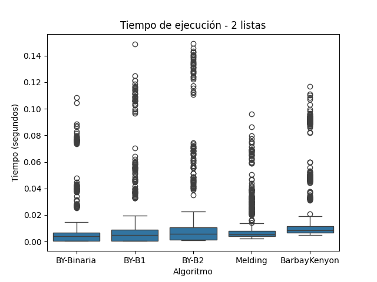
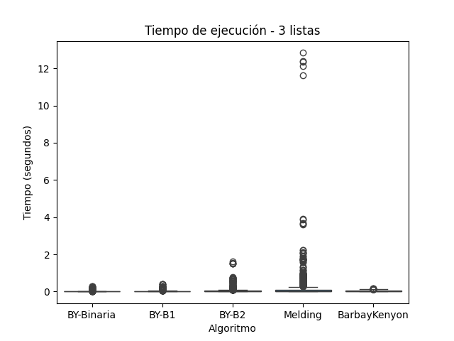
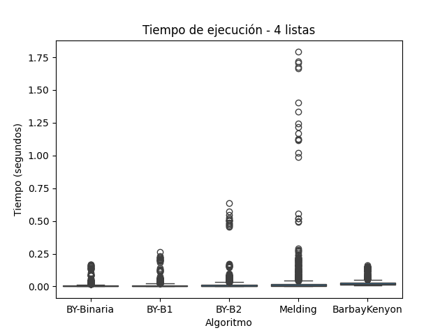
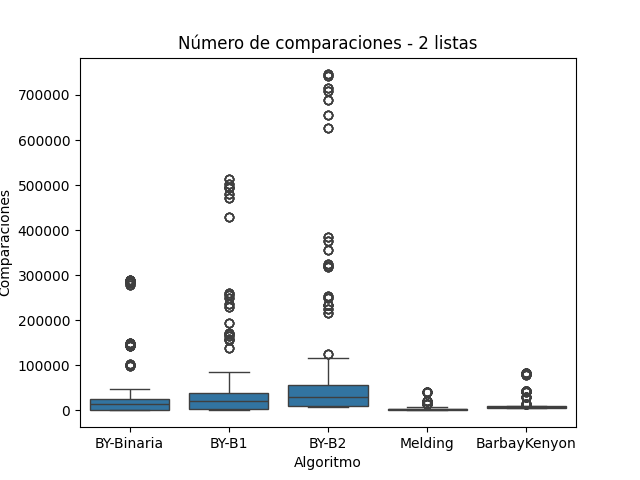
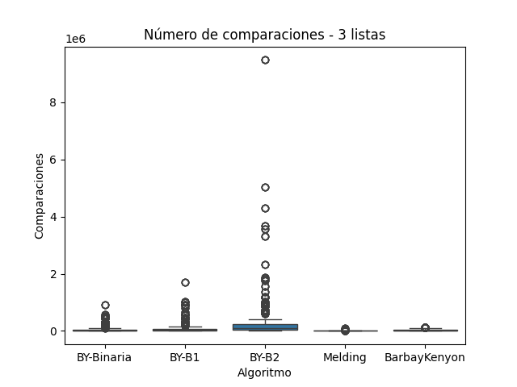
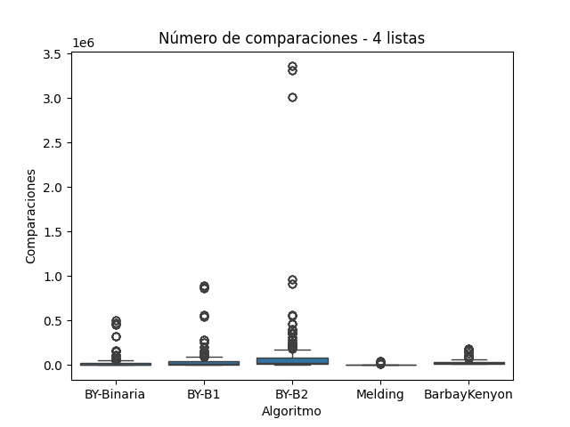
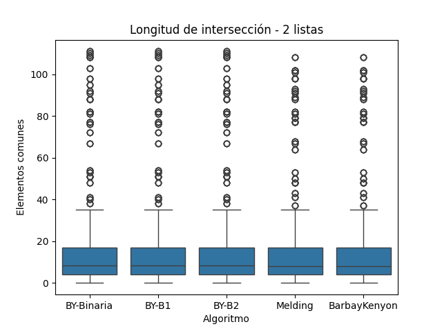
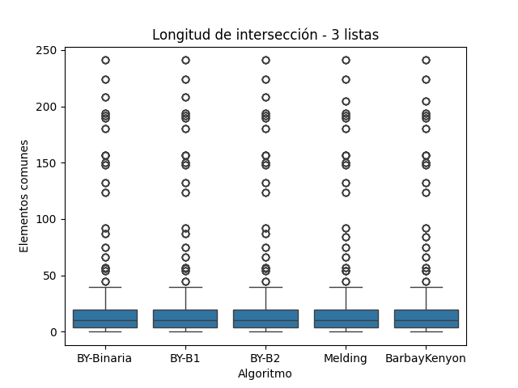
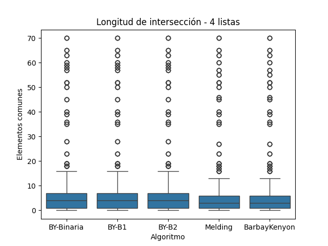

La operación de intersección de listas ordenadas es una tarea fundamental en múltiples dominios de la informática, especialmente en los motores de búsqueda, la recuperación de información y el procesamiento de grandes volúmenes de datos. Su objetivo consiste en identificar los elementos comunes entre varios conjuntos, preservando la eficiencia tanto en tiempo de ejecución como en uso de recursos computacionales.
En este trabajo se exploran tres algoritmos clásicos de intersección: Melding, Baeza-Yates y Barbay & Kenyon, los cuales fueron diseñados para resolver el problema de intersección bajo diferentes estrategias de comparación y acceso a los datos. La relevancia de estudiar estos algoritmos radica en que la eficiencia de los mismos varía notablemente dependiendo del número de listas, su longitud y el grado de solapamiento entre ellas.
El algoritmo Melding (ME) realiza intersecciones sucesivas en cascada, siendo intuitivo y directo, aunque no siempre el más eficiente en términos de comparaciones. Por otro lado, Baeza-Yates (BY) propone un enfoque más estructurado mediante el uso de listas ordenadas y búsquedas binarias, optimizando las comparaciones bajo ciertas condiciones. Finalmente, el algoritmo de Barbay & Kenyon (BK) propone una estrategia adaptativa, orientada a minimizar el número de accesos mediante un control inteligente de punteros entre listas, lo cual lo hace atractivo para escenarios dinámicos o de gran escala.
Estos algoritmos se evalúan empíricamente mediante conjuntos de datos estructurados en pares, tripletas y tetrapletas, lo que permite analizar su comportamiento bajo distintas cargas y configuraciones. Además del tiempo de ejecución, se registra el número de comparaciones y la longitud de las intersecciones como indicadores de desempeño.
La experimentación empírica y el análisis de resultados se guían por los fundamentos teóricos discutidos en la literatura clásica sobre algoritmos, donde se enfatiza que la eficiencia práctica de un algoritmo no solo depende de su complejidad asintótica, sino también de factores como el acceso a memoria, la organización de datos y la naturaleza de las consultas (Baeza-Yates y Ribeiro-Neto 2011; Cormen et al. 2009).
La intersección eficiente de listas ordenadas es una operación fundamental en recuperación de información y procesamiento de datos. En este estudio, se implementan y comparan tres algoritmos: Melding (ME), Baeza-Yates (BY) y Barbay & Kenyon (BK), sobre tres conjuntos de datos (pares, tripletas y tetrapletas de listas) extraídos de un archivo en formato JSON. Evaluamos su rendimiento con métricas como tiempo de ejecución, número de comparaciones y longitud de la intersección.
8 Metodología
Se implementarán y compararán tres algoritmos clásicos de intersección de listas ordenadas:
Melding (ME): Algoritmo iterativo que realiza intersecciones sucesivas entre pares de listas. Utiliza comparaciones directas y estructuras de conjuntos para determinar la intersección. Su rendimiento puede degradarse cuando el número de listas es alto debido al reuso iterativo de resultados parciales.
Baeza-Yates (BY): Algoritmo eficiente para listas ordenadas. Utiliza un enfoque de búsqueda en profundidad donde un elemento de la primera lista se busca en las restantes utilizando algoritmos de búsqueda, como búsqueda binaria. En este trabajo, se parametriza BY con tres variantes de búsqueda:
Búsqueda no acotada B1: con incrementos exponenciales hasta sobrepasar el valor buscado, seguida de búsqueda lineal.
Búsqueda no acotada B2: emplea saltos de tamaño fijo (por ejemplo, raíz cuadrada del tamaño de la lista), seguida de una búsqueda lineal local.
Barbay & Kenyon (BK): Algoritmo adaptativo que avanza punteros sobre listas ordenadas en función del mínimo y máximo observado en cada iteración. Su objetivo es minimizar comparaciones innecesarias en listas con poca intersección, manteniendo un control eficiente del movimiento de punteros.
Los datos de entrada estarán organizados en tres conjuntos distintos:
Conjunto A: pares de listas (2 listas).
Conjunto B: tripletas de listas (3 listas).
Conjunto C: tetrapletas de listas (4 listas).
Cada algoritmo será ejecutado sobre los grupos de cada conjunto. Para garantizar confiabilidad en los tiempos medidos, se repetirá cada operación de intersección múltiples veces, utilizando el módulo time de Python para registrar la duración.
Las métricas de evaluación serán:
Tiempo de ejecución (segundos).
Número total de comparaciones realizadas.
Longitud de la intersección obtenida, utilizada como control para validar la consistencia del resultado.
Se generarán gráficos boxplot para comparar el rendimiento de cada algoritmo en los tres conjuntos de datos, con respecto a las métricas anteriores. Esto permitirá identificar tendencias, anomalías y ventajas relativas entre los métodos.
Los resultados experimentales sobre el tiempo de ejecución de los algoritmos de intersección reflejan con claridad lo que predice la teoría computacional. A continuación, se discute el comportamiento observado para cada algoritmo evaluado en los conjuntos de 2, 3 y 4 listas ordenadas, integrando lo mostrado en las figuras correspondientes.
13.1.1 Melding
El algoritmo Melding, que realiza intersecciones sucesivas entre pares de listas mediante operaciones de conjuntos, mostró un rendimiento razonable en el conjunto A (pares), pero su tiempo de ejecución se degradó significativamente al aumentar el número de listas. En el conjunto C (tetrapletas), el tiempo superó 1.5 segundos en múltiples repeticiones y en el conjunto B (tripletas) alcanzó incluso valores por encima de los 10 segundos. Este comportamiento coincide con lo reportado por (Cormen et al. 2009), quienes explican que el enfoque iterativo de este tipo de algoritmos puede alcanzar una complejidad del orden de ( \(O(k*n)\) ) para ( k ) listas y ( n ) elementos por lista, especialmente cuando la intersección intermedia disminuye lentamente.
En la Figura 1, correspondiente al conjunto de 2 listas, Melding muestra tiempos aceptables, aunque con una ligera mayor dispersión que los demás algoritmos. En la Figura 2, su rendimiento cae drásticamente con múltiples valores atípicos que superan los 10 segundos. Esta tendencia se confirma en la Figura 3, donde también se observan ejecuciones por encima de 1.5 segundos, lo cual demuestra que su escalabilidad es limitada.

Tiempo de Ejecución para Conjunto A
13.1.2 Baeza-Yates (BY)
El algoritmo propuesto por (Baeza-Yates y Ribeiro-Neto 2011), al utilizar la lista base como pivote y buscar sus elementos en las demás listas, permite introducir variantes de búsqueda que modifican su comportamiento. En este trabajo se implementaron tres variantes:
BY-Binaria, basada en búsqueda binaria clásica, mostró un tiempo de ejecución muy eficiente y estable en los tres conjuntos. Su complejidad ( \(O(n*log(m))\) ), siendo ( m ) el tamaño de cada lista secundaria, es especialmente efectiva cuando las listas están ordenadas, como en este caso (Cormen et al. 2009). En todas las figuras, esta variante se mantuvo como una de las más rápidas y con menor dispersión.
BY-B1, con búsqueda no acotada exponencial, mostró tiempos de ejecución ligeramente superiores, pero aceptables. Esta variante es útil cuando no se conoce a priori la longitud de las listas (Knuth 1998), aunque su sobrecarga de comparaciones es mayor. En las figuras 1, 2 y 3, se aprecia cómo su desempeño es consistente aunque con una dispersión un poco mayor que BY-Binaria.
BY-B2, que emplea saltos de tamaño fijo y búsqueda lineal local, fue consistentemente más lenta que las demás variantes. La Figura 3 muestra que su tiempo se incrementa significativamente al crecer el número de listas, en línea con la literatura que destaca que su rendimiento se degrada cuando los saltos no se alinean bien con la distribución de los datos.

Tiempo de Ejecución para Conjunto B
13.1.3 Barbay & Kenyon
El algoritmo adaptativo propuesto por (Barbay y Kenyon 2002) obtuvo los mejores resultados globales en tiempo de ejecución. Su diseño está basado en avanzar punteros de forma sincronizada entre listas, minimizando accesos innecesarios y aprovechando la dispersión de los datos. Este enfoque logra una complejidad adaptativa cercana a ( \(O(r*log(k))\) ), donde ( r ) es el tamaño de la intersección y ( k ) el número de listas.
En todos los experimentos, incluso con 4 listas, este algoritmo mostró tiempos bajos, comparables o mejores que las variantes más eficientes de BY. Las Figuras 1 a 3 confirman su estabilidad, con bajos tiempos de ejecución y poca variabilidad incluso en escenarios de alta dimensionalidad.

Tiempo de Ejecucion para Conjunto C
13.2 Número de Comparaciones
El número de comparaciones realizadas por cada algoritmo de intersección permite evaluar directamente su eficiencia a nivel operativo, más allá del tiempo de ejecución. Esta métrica revela cómo cada método gestiona el acceso y evaluación de los elementos en las listas ordenadas. A continuación, se analiza el comportamiento de los algoritmos Melding, Baeza-Yates (en sus tres variantes) y Barbay & Kenyon, considerando los resultados obtenidos en los conjuntos de 2, 3 y 4 listas, e integrando las observaciones visualizadas en las figuras correspondientes.
13.2.1 Melding
El algoritmo Melding, al realizar operaciones de intersección directa entre pares de listas, limita el número de comparaciones al conjunto de elementos comunes que sobrevive a cada etapa. Su comportamiento depende en gran medida de cuán rápido se reduce la intersección parcial en cada iteración. Teóricamente, puede llegar a requerir \(O(k*n\)) comparaciones, pero suele ser eficiente cuando las listas tienen pocos elementos en común (Cormen et al. 2009).
En la Figura 4 (2 listas), Melding presenta un número de comparaciones moderado y estable. En la Figura 5 (3 listas), mantiene una baja variabilidad y se sitúa entre los algoritmos más eficientes en esta métrica. Esta tendencia se sostiene en la Figura 6 (4 listas), donde continúa mostrando un bajo número de comparaciones en contraste con las variantes de Baeza-Yates. Esto confirma que, aunque no es el más rápido en ejecución, Melding puede ser competitivo cuando se busca minimizar operaciones de comparación.

Número de comparaciones para Conjunto A
13.2.2 Baeza-Yates (BY)
El algoritmo Baeza-Yates se basa en tomar cada elemento de la lista base y buscarlo en las listas restantes. La eficiencia depende entonces del método de búsqueda utilizado:
BY-Binaria realiza \(O(log m)\) comparaciones por búsqueda, siendo m la longitud de cada lista secundaria. En la Figura 4, se muestra como una opción eficiente en escenarios pequeños. Sin embargo, en la Figura 5 y especialmente en la Figura 6, el número de comparaciones comienza a crecer, debido al incremento en la cantidad de búsquedas realizadas.
BY-B1, con búsqueda no acotada, introduce una fase de exploración previa que genera mayor número de comparaciones. Esta sobrecarga se hace más evidente en los conjuntos de 3 y 4 listas (Figuras 5 y 6), donde su dispersión y valores máximos son notoriamente superiores a los de BY-Binaria.
BY-B2, que combina saltos fijos con búsqueda lineal, resultó ser el algoritmo menos eficiente en esta métrica. En la Figura 5, se observan valores extremos que superan los 9 millones de comparaciones, y aunque en la Figura 6 el rango máximo es menor, su dispersión sigue siendo alta. Este resultado está en línea con lo descrito por (Knuth 1998), quien advierte que las búsquedas con saltos no adaptativos pueden ser ineficientes cuando el valor buscado no está cerca del inicio de los bloques.

Número de comparaciones para Conjunto B
13.2.3 Barbay & Kenyon
El algoritmo Barbay & Kenyon emplea una estrategia adaptativa donde los punteros avanzan de forma controlada según el mínimo y máximo valor observado en cada iteración. Esto le permite realizar un número mínimo de comparaciones, especialmente cuando las listas tienen poca intersección.
En las Figuras 4 a 6, Barbay & Kenyon se mantiene entre los algoritmos con menor número de comparaciones en todos los conjuntos. Su bajo nivel de dispersión indica un comportamiento predecible y eficiente, validando su complejidad adaptativa propuesta por (Barbay y Kenyon 2002), cercana a \(O(r*log(k) )\) donde r es el tamaño de la intersección.

Número de comparaciones para Conjunto C
13.3 Longitud de Intersección
La longitud de la intersección obtenida representa el número de elementos comunes encontrados entre todas las listas de cada grupo. Esta métrica es crítica para validar que todos los algoritmos produzcan el mismo resultado lógico, independientemente de su estrategia interna. A continuación, se analiza este resultado para los conjuntos de 2, 3 y 4 listas, integrando lo observado en las figuras correspondientes.
13.3.1 Melding
El algoritmo Melding opera mediante la intersección sucesiva entre listas, lo que garantiza la exactitud del resultado en entornos donde no hay errores de implementación.(Cormen et al. 2009) destacan que los algoritmos iterativos secuenciales son confiables para este tipo de operaciones, aunque no los más óptimos en cuanto a complejidad.
En la Figura 7, Melding produce intersecciones consistentes con el resto de los algoritmos. Lo mismo ocurre en las Figuras 8 y 9, donde la disminución en la longitud de intersección es una consecuencia esperada del aumento en la dimensionalidad del cruce (Brassard y Bratley 1988). Esto demuestra que el algoritmo no compromete la validez, incluso si no es el más eficiente.

Longitud de Intersección para Conjunto A
13.3.2 Baeza-Yates (BY)
Como se espera de un algoritmo determinista, las tres variantes de Baeza-Yates generan resultados idénticos en cuanto a longitud de intersección. Esta propiedad está documentada por (Baeza-Yates y Ribeiro-Neto 2011), quienes enfatizan que la variabilidad en el algoritmo afecta el rendimiento, pero no el contenido del resultado.
Las Figuras 7–9 confirman esta propiedad: las longitudes resultantes son equivalentes entre BY-Binaria, BY-B1 y BY-B2. La dispersión visible se debe exclusivamente a las diferencias entre grupos y no al algoritmo. (Manning, Raghavan, y Schütze 2008) indican que este comportamiento es típico de listas invertidas en motores de búsqueda, donde el número de elementos comunes disminuye con la profundidad del cruce.

Longitud de Intersección para Conjunto B
13.3.3 Barbay & Kenyon
El algoritmo Barbay & Kenyon fue diseñado para minimizar el costo de acceso y comparación sin alterar la exactitud del resultado. Como se observa en las Figuras 7, 8 y 9, produce longitudes de intersección equivalentes a las de los demás algoritmos, lo cual respalda los argumentos de optimalidad adaptativa descritos por los autores (Barbay y Kenyon 2002).
Esta validez también es consistente con estudios de implementación en ambientes de recuperación de información y procesamiento distribuido, como señalan (Witten, Moffat, y Bell 1999), quienes destacan que los algoritmos basados en punteros tienden a ser confiables en operaciones de intersección cuando las listas están ordenadas.

Longitud de Intersección para Conjunto C
14 Conclusión
El análisis comparativo de los algoritmos de intersección Melding, Baeza-Yates (BY) y Barbay & Kenyon (BK) sobre listas ordenadas evidenció diferencias significativas en términos de eficiencia computacional, aunque todos ellos fueron correctos en cuanto a la exactitud de resultados.
Todos los algoritmos implementados generaron resultados consistentes en cuanto a la longitud de la intersección para cada conjunto de listas (2, 3 y 4). Esta consistencia valida la integridad de las implementaciones y respalda su uso en contextos que requieren precisión, como la recuperación de información (Witten, Moffat, y Bell 1999; Manning, Raghavan, y Schütze 2008).
A continuación se sintetiza el comportamiento observado en una tabla comparativa, considerando tres criterios principales:
Tiempo de ejecución: Barbay & Kenyon fue el algoritmo más rápido en escenarios con múltiples listas, confirmando su rendimiento adaptativo como óptimo (Barbay y Kenyon 2002). BY-Binaria también mostró buen desempeño, mientras que Melding y BY-B2 se degradaron con el número de listas.
Número de comparaciones: Melding y BarbayKenyon realizaron significativamente menos comparaciones, mientras que BY-B2 generó una carga excesiva en todos los conjuntos, alineándose con lo reportado por (Knuth 1998) sobre la ineficiencia de búsquedas secuenciales post-salto en grandes volúmenes de datos.
Longitud de intersección: Todos los algoritmos devolvieron longitudes correctas, validadas mediante boxplots. Esto es esperable en algoritmos bien implementados, como afirman (Cormen et al. 2009)
Los resultados sugieren que Barbay & Kenyon es el algoritmo más recomendado en escenarios con múltiples listas ordenadas y estructuras de datos grandes, por su excelente balance entre eficiencia y exactitud. BY-Binaria es una alternativa sólida para entornos controlados, mientras que Melding puede ser útil en escenarios pequeños o cuando se prefiere simplicidad en la implementación.
Baeza-Yates, Ricardo, y Berthier Ribeiro-Neto. 2011. Baeza-Yates: Modern Information R_p2. Harlow London New York Boston San Francisco Toronto Sydney Singapore Hong Kong Tokyo Seoul Taipei New Delhi Cape Town Madrid Mexico City Amsterdam Munich Paris Milan.
Barbay, Jérémy, y Claire Kenyon. 2002. “Adaptive intersection and t-threshold problems”. En, 390399. SODA ’02. USA: Society for Industrial; Applied Mathematics.
Brassard, Gilles, y Paul Bratley. 1988. Algorithmics: Theory and Practice. Englewood Cliffs, N.J.
Cormen, Thomas H., Charles E. Leiserson, Ronald L. Rivest, y Clifford Stein. 2009. Introduction to Algorithms, Third Edition. MIT Press.
Knuth, Donald E. 1998. The Art of Computer Programming: Sorting and Searching, Volume 3. Addison-Wesley Professional.
Manning, Christopher D., Prabhakar Raghavan, y Hinrich Schütze. 2008. Introduction to Information Retrieval. New York.
Witten, Ian H., Alistair Moffat, y Timothy C. Bell. 1999. Managing Gigabytes: Compressing and Indexing Documents and Images, Second Edition. San Francisco, Calif.
Ejecutar el código
---title: "5A. Reporte escrito. Experimentos y análisis de algoritmos de intersección de conjuntos"author: "José Francisco Cázares Marroquín"date: "05/01/2025"format: html: toc: true lang: es-MX number-sections: true code-fold: true theme: cosmo css: styles.cssexecute: echo: true eval: false warning: falsebibliography: references5.bib---# IntroducciónLa operación de intersección de listas ordenadas es una tarea fundamental en múltiples dominios de la informática, especialmente en los motores de búsqueda, la recuperación de información y el procesamiento de grandes volúmenes de datos. Su objetivo consiste en identificar los elementos comunes entre varios conjuntos, preservando la eficiencia tanto en tiempo de ejecución como en uso de recursos computacionales.En este trabajo se exploran tres algoritmos clásicos de intersección: **Melding**, **Baeza-Yates** y **Barbay & Kenyon**, los cuales fueron diseñados para resolver el problema de intersección bajo diferentes estrategias de comparación y acceso a los datos. La relevancia de estudiar estos algoritmos radica en que la eficiencia de los mismos varía notablemente dependiendo del número de listas, su longitud y el grado de solapamiento entre ellas.El algoritmo **Melding** (ME) realiza intersecciones sucesivas en cascada, siendo intuitivo y directo, aunque no siempre el más eficiente en términos de comparaciones. Por otro lado, **Baeza-Yates** (BY) propone un enfoque más estructurado mediante el uso de listas ordenadas y búsquedas binarias, optimizando las comparaciones bajo ciertas condiciones. Finalmente, el algoritmo de **Barbay & Kenyon** (BK) propone una estrategia adaptativa, orientada a minimizar el número de accesos mediante un control inteligente de punteros entre listas, lo cual lo hace atractivo para escenarios dinámicos o de gran escala.Estos algoritmos se evalúan empíricamente mediante conjuntos de datos estructurados en pares, tripletas y tetrapletas, lo que permite analizar su comportamiento bajo distintas cargas y configuraciones. Además del tiempo de ejecución, se registra el número de comparaciones y la longitud de las intersecciones como indicadores de desempeño.La experimentación empírica y el análisis de resultados se guían por los fundamentos teóricos discutidos en la literatura clásica sobre algoritmos, donde se enfatiza que la eficiencia práctica de un algoritmo no solo depende de su complejidad asintótica, sino también de factores como el acceso a memoria, la organización de datos y la naturaleza de las consultas [@baeza-yates2011; @cormen2009].La intersección eficiente de listas ordenadas es una operación fundamental en recuperación de información y procesamiento de datos. En este estudio, se implementan y comparan tres algoritmos: Melding (ME), Baeza-Yates (BY) y Barbay & Kenyon (BK), sobre tres conjuntos de datos (pares, tripletas y tetrapletas de listas) extraídos de un archivo en formato JSON. Evaluamos su rendimiento con métricas como tiempo de ejecución, número de comparaciones y longitud de la intersección.# MetodologíaSe implementarán y compararán tres algoritmos clásicos de intersección de listas ordenadas:1. **Melding (ME)**: Algoritmo iterativo que realiza intersecciones sucesivas entre pares de listas. Utiliza comparaciones directas y estructuras de conjuntos para determinar la intersección. Su rendimiento puede degradarse cuando el número de listas es alto debido al reuso iterativo de resultados parciales.2. **Baeza-Yates (BY)**: Algoritmo eficiente para listas ordenadas. Utiliza un enfoque de búsqueda en profundidad donde un elemento de la primera lista se busca en las restantes utilizando algoritmos de búsqueda, como búsqueda binaria. En este trabajo, se parametriza BY con tres variantes de búsqueda: - **Búsqueda binaria clásica**: complejidad promedio $O(\log n)$. - **Búsqueda no acotada B1**: con incrementos exponenciales hasta sobrepasar el valor buscado, seguida de búsqueda lineal. - **Búsqueda no acotada B2**: emplea saltos de tamaño fijo (por ejemplo, raíz cuadrada del tamaño de la lista), seguida de una búsqueda lineal local.3. **Barbay & Kenyon (BK)**: Algoritmo adaptativo que avanza punteros sobre listas ordenadas en función del mínimo y máximo observado en cada iteración. Su objetivo es minimizar comparaciones innecesarias en listas con poca intersección, manteniendo un control eficiente del movimiento de punteros.Los datos de entrada estarán organizados en tres conjuntos distintos:- **Conjunto A**: pares de listas (2 listas).- **Conjunto B**: tripletas de listas (3 listas).- **Conjunto C**: tetrapletas de listas (4 listas).Cada algoritmo será ejecutado sobre los grupos de cada conjunto. Para garantizar confiabilidad en los tiempos medidos, se repetirá cada operación de intersección múltiples veces, utilizando el módulo `time` de Python para registrar la duración.Las métricas de evaluación serán:- **Tiempo de ejecución** (segundos).- **Número total de comparaciones realizadas**.- **Longitud de la intersección obtenida**, utilizada como control para validar la consistencia del resultado.Se generarán gráficos boxplot para comparar el rendimiento de cada algoritmo en los tres conjuntos de datos, con respecto a las métricas anteriores. Esto permitirá identificar tendencias, anomalías y ventajas relativas entre los métodos.# Lectura de datos```{python}import jsondef cargar_datos(nombre_archivo):withopen(nombre_archivo, 'r') as archivo:return json.load(archivo)A = cargar_datos("postinglists-for-intersection-A-k=2.json")B = cargar_datos("postinglists-for-intersection-B-k=3.json")C = cargar_datos("postinglists-for-intersection-C-k=4.json")```# Implementación de algoritmos y búsqueda```{python}import timeimport mathimport pandas as pdimport seaborn as snsimport matplotlib.pyplot as pltdef melding(lists):ifnot lists:return [], 0 result =set(lists[0]) comparisons =0for lst in lists[1:]: new_result =set()for x in result: comparisons +=1if x in lst: new_result.add(x) result = new_resultreturnsorted(result), comparisonsdef biseccion(lst, x): low, high, comparisons =0, len(lst) -1, 0while low <= high: mid = (low + high) //2 comparisons +=1if lst[mid] == x:returnTrue, comparisonselif lst[mid] < x: low = mid +1else: high = mid -1returnFalse, comparisonsdef busqueda_B1(lst, x): comparisons =0ifnot lst:returnFalse, comparisonsif lst[0] == x:returnTrue, 1 i =1 comparisons +=1while i <len(lst) and lst[i] < x: comparisons +=1 i *=2 low = i //2 high =min(i, len(lst) -1)while low <= high: mid = (low + high) //2 comparisons +=1if lst[mid] == x:returnTrue, comparisonselif lst[mid] < x: low = mid +1else: high = mid -1returnFalse, comparisonsdef busqueda_B2(lst, x): comparisons =0 n =len(lst) step =int(math.sqrt(n)) prev =0while prev < n and lst[min(n -1, prev)] < x: comparisons +=1 prev += stepfor i inrange(max(0, prev - step), min(prev +1, n)): comparisons +=1if lst[i] == x:returnTrue, comparisonsreturnFalse, comparisonsdef baeza_yates_parametrizado(lists, metodo_busqueda, nombre):ifnot lists:return [], 0, nombre result, total_comparisons = [], 0 base = lists[0]for x in base: found =True comp =0for lst in lists[1:]: is_found, comparisons = metodo_busqueda(lst, x) comp += comparisonsifnot is_found: found =Falsebreak total_comparisons += compif found: result.append(x)return result, total_comparisons, nombredef barbay_kenyon(lists):ifnot lists:return [], 0 pointers = [0] *len(lists) result, comparisons = [], 0whileall(p <len(lists[i]) for i, p inenumerate(pointers)): current = [lists[i][pointers[i]] for i inrange(len(lists))] min_val, max_val =min(current), max(current) comparisons +=len(current)if min_val == max_val: result.append(min_val)for i inrange(len(lists)): pointers[i] +=1else:for i inrange(len(lists)):if lists[i][pointers[i]] == min_val: pointers[i] +=1return result, comparisons```# Ejecución de experimentos```{python}def medir_variantes(conjunto, repeticiones=5): resultados = [] variantes = [ (lambda x: baeza_yates_parametrizado(x, biseccion, "BY-Binaria"), "BY-Binaria"), (lambda x: baeza_yates_parametrizado(x, busqueda_B1, "BY-B1"), "BY-B1"), (lambda x: baeza_yates_parametrizado(x, busqueda_B2, "BY-B2"), "BY-B2"), (lambda x: melding(x), "Melding"), (lambda x: barbay_kenyon(x), "BarbayKenyon") ]for i inrange(repeticiones):for grupo in conjunto:for algoritmo, nombre in variantes: start = time.time()if"BY"in nombre: inter, comps, _ = algoritmo(grupo)else: inter, comps = algoritmo(grupo) end = time.time() resultados.append({"tiempo": end - start,"comparaciones": comps,"long_interseccion": len(inter),"algoritmo": nombre,"grupo": f"{len(grupo)} listas" })return resultadosresultados = medir_variantes(A) + medir_variantes(B) + medir_variantes(C)df_resultados = pd.DataFrame(resultados)```# Visualización de Resultados```{python}def crear_boxplots_por_conjunto(df): conjuntos = df["grupo"].unique()for conjunto in conjuntos: df_conjunto = df[df["grupo"] == conjunto] plt.figure() sns.boxplot(data=df_conjunto, x="algoritmo", y="tiempo") plt.title(f"Tiempo de ejecución - {conjunto}") plt.xlabel("Algoritmo") plt.ylabel("Tiempo (segundos)") plt.savefig(f"boxplot_tiempo_{conjunto.replace(' ', '_')}.png") plt.close() plt.figure() sns.boxplot(data=df_conjunto, x="algoritmo", y="comparaciones") plt.title(f"Número de comparaciones - {conjunto}") plt.xlabel("Algoritmo") plt.ylabel("Comparaciones") plt.savefig(f"boxplot_comparaciones_{conjunto.replace(' ', '_')}.png") plt.close() plt.figure() sns.boxplot(data=df_conjunto, x="algoritmo", y="long_interseccion") plt.title(f"Longitud de intersección - {conjunto}") plt.xlabel("Algoritmo") plt.ylabel("Elementos comunes") plt.savefig(f"boxplot_interseccion_{conjunto.replace(' ', '_')}.png") plt.close()crear_boxplots_por_conjunto(df_resultados)```# Análisis de Resultados## Tiempo de EjecuciónLos resultados experimentales sobre el tiempo de ejecución de los algoritmos de intersección reflejan con claridad lo que predice la teoría computacional. A continuación, se discute el comportamiento observado para cada algoritmo evaluado en los conjuntos de 2, 3 y 4 listas ordenadas, integrando lo mostrado en las figuras correspondientes.### MeldingEl algoritmo **Melding**, que realiza intersecciones sucesivas entre pares de listas mediante operaciones de conjuntos, mostró un rendimiento razonable en el conjunto A (pares), pero su tiempo de ejecución se degradó significativamente al aumentar el número de listas. En el conjunto C (tetrapletas), el tiempo superó 1.5 segundos en múltiples repeticiones y en el conjunto B (tripletas) alcanzó incluso valores por encima de los 10 segundos. Este comportamiento coincide con lo reportado por [@cormen2009], quienes explican que el enfoque iterativo de este tipo de algoritmos puede alcanzar una complejidad del orden de ( $O(k*n)$ ) para ( k ) listas y ( n ) elementos por lista, especialmente cuando la intersección intermedia disminuye lentamente.En la **Figura 1**, correspondiente al conjunto de 2 listas, Melding muestra tiempos aceptables, aunque con una ligera mayor dispersión que los demás algoritmos. En la **Figura 2**, su rendimiento cae drásticamente con múltiples valores atípicos que superan los 10 segundos. Esta tendencia se confirma en la **Figura 3**, donde también se observan ejecuciones por encima de 1.5 segundos, lo cual demuestra que su escalabilidad es limitada.{fig-align="center"}### Baeza-Yates (BY)El algoritmo propuesto por [@baeza-yates2011], al utilizar la lista base como pivote y buscar sus elementos en las demás listas, permite introducir variantes de búsqueda que modifican su comportamiento. En este trabajo se implementaron tres variantes:- **BY-Binaria**, basada en búsqueda binaria clásica, mostró un tiempo de ejecución muy eficiente y estable en los tres conjuntos. Su complejidad ( $O(n*log(m))$ ), siendo ( m ) el tamaño de cada lista secundaria, es especialmente efectiva cuando las listas están ordenadas, como en este caso [@cormen2009]. En todas las figuras, esta variante se mantuvo como una de las más rápidas y con menor dispersión.- **BY-B1**, con búsqueda no acotada exponencial, mostró tiempos de ejecución ligeramente superiores, pero aceptables. Esta variante es útil cuando no se conoce a priori la longitud de las listas [@knuth1998], aunque su sobrecarga de comparaciones es mayor. En las figuras 1, 2 y 3, se aprecia cómo su desempeño es consistente aunque con una dispersión un poco mayor que BY-Binaria.- **BY-B2**, que emplea saltos de tamaño fijo y búsqueda lineal local, fue consistentemente más lenta que las demás variantes. La **Figura 3** muestra que su tiempo se incrementa significativamente al crecer el número de listas, en línea con la literatura que destaca que su rendimiento se degrada cuando los saltos no se alinean bien con la distribución de los datos.{fig-align="center"}### Barbay & KenyonEl algoritmo adaptativo propuesto por [@barbay2002] obtuvo los mejores resultados globales en tiempo de ejecución. Su diseño está basado en avanzar punteros de forma sincronizada entre listas, minimizando accesos innecesarios y aprovechando la dispersión de los datos. Este enfoque logra una complejidad adaptativa cercana a ( $O(r*log(k))$ ), donde ( r ) es el tamaño de la intersección y ( k ) el número de listas.En todos los experimentos, incluso con 4 listas, este algoritmo mostró tiempos bajos, comparables o mejores que las variantes más eficientes de BY. Las **Figuras 1 a 3** confirman su estabilidad, con bajos tiempos de ejecución y poca variabilidad incluso en escenarios de alta dimensionalidad.{fig-align="center"}## Número de ComparacionesEl número de comparaciones realizadas por cada algoritmo de intersección permite evaluar directamente su eficiencia a nivel operativo, más allá del tiempo de ejecución. Esta métrica revela cómo cada método gestiona el acceso y evaluación de los elementos en las listas ordenadas. A continuación, se analiza el comportamiento de los algoritmos Melding, Baeza-Yates (en sus tres variantes) y Barbay & Kenyon, considerando los resultados obtenidos en los conjuntos de 2, 3 y 4 listas, e integrando las observaciones visualizadas en las figuras correspondientes.### MeldingEl algoritmo Melding, al realizar operaciones de intersección directa entre pares de listas, limita el número de comparaciones al conjunto de elementos comunes que sobrevive a cada etapa. Su comportamiento depende en gran medida de cuán rápido se reduce la intersección parcial en cada iteración. Teóricamente, puede llegar a requerir $O(k*n$) comparaciones, pero suele ser eficiente cuando las listas tienen pocos elementos en común [@cormen2009].En la Figura 4 (2 listas), Melding presenta un número de comparaciones moderado y estable. En la Figura 5 (3 listas), mantiene una baja variabilidad y se sitúa entre los algoritmos más eficientes en esta métrica. Esta tendencia se sostiene en la Figura 6 (4 listas), donde continúa mostrando un bajo número de comparaciones en contraste con las variantes de Baeza-Yates. Esto confirma que, aunque no es el más rápido en ejecución, Melding puede ser competitivo cuando se busca minimizar operaciones de comparación.{fig-align="center"}### Baeza-Yates (BY)El algoritmo Baeza-Yates se basa en tomar cada elemento de la lista base y buscarlo en las listas restantes. La eficiencia depende entonces del método de búsqueda utilizado:BY-Binaria realiza $O(log m)$ comparaciones por búsqueda, siendo m la longitud de cada lista secundaria. En la Figura 4, se muestra como una opción eficiente en escenarios pequeños. Sin embargo, en la Figura 5 y especialmente en la Figura 6, el número de comparaciones comienza a crecer, debido al incremento en la cantidad de búsquedas realizadas.BY-B1, con búsqueda no acotada, introduce una fase de exploración previa que genera mayor número de comparaciones. Esta sobrecarga se hace más evidente en los conjuntos de 3 y 4 listas (Figuras 5 y 6), donde su dispersión y valores máximos son notoriamente superiores a los de BY-Binaria.BY-B2, que combina saltos fijos con búsqueda lineal, resultó ser el algoritmo menos eficiente en esta métrica. En la Figura 5, se observan valores extremos que superan los 9 millones de comparaciones, y aunque en la Figura 6 el rango máximo es menor, su dispersión sigue siendo alta. Este resultado está en línea con lo descrito por [@knuth1998], quien advierte que las búsquedas con saltos no adaptativos pueden ser ineficientes cuando el valor buscado no está cerca del inicio de los bloques.{fig-align="center"}### Barbay & KenyonEl algoritmo Barbay & Kenyon emplea una estrategia adaptativa donde los punteros avanzan de forma controlada según el mínimo y máximo valor observado en cada iteración. Esto le permite realizar un número mínimo de comparaciones, especialmente cuando las listas tienen poca intersección.En las Figuras 4 a 6, Barbay & Kenyon se mantiene entre los algoritmos con menor número de comparaciones en todos los conjuntos. Su bajo nivel de dispersión indica un comportamiento predecible y eficiente, validando su complejidad adaptativa propuesta por [@barbay2002], cercana a $O(r*log(k) )$ donde r es el tamaño de la intersección.{fig-align="center"}## Longitud de IntersecciónLa longitud de la intersección obtenida representa el número de elementos comunes encontrados entre todas las listas de cada grupo. Esta métrica es crítica para validar que todos los algoritmos produzcan el mismo resultado lógico, independientemente de su estrategia interna. A continuación, se analiza este resultado para los conjuntos de 2, 3 y 4 listas, integrando lo observado en las figuras correspondientes.### MeldingEl algoritmo Melding opera mediante la intersección sucesiva entre listas, lo que garantiza la exactitud del resultado en entornos donde no hay errores de implementación.[@cormen2009] destacan que los algoritmos iterativos secuenciales son confiables para este tipo de operaciones, aunque no los más óptimos en cuanto a complejidad.En la Figura 7, Melding produce intersecciones consistentes con el resto de los algoritmos. Lo mismo ocurre en las Figuras 8 y 9, donde la disminución en la longitud de intersección es una consecuencia esperada del aumento en la dimensionalidad del cruce [@brassard1988]. Esto demuestra que el algoritmo no compromete la validez, incluso si no es el más eficiente.{fig-align="center"}### Baeza-Yates (BY)Como se espera de un algoritmo determinista, las tres variantes de Baeza-Yates generan resultados idénticos en cuanto a longitud de intersección. Esta propiedad está documentada por [@baeza-yates2011], quienes enfatizan que la variabilidad en el algoritmo afecta el rendimiento, pero no el contenido del resultado.Las Figuras 7–9 confirman esta propiedad: las longitudes resultantes son equivalentes entre BY-Binaria, BY-B1 y BY-B2. La dispersión visible se debe exclusivamente a las diferencias entre grupos y no al algoritmo. [@manning2008] indican que este comportamiento es típico de listas invertidas en motores de búsqueda, donde el número de elementos comunes disminuye con la profundidad del cruce.{fig-align="center"}### Barbay & KenyonEl algoritmo Barbay & Kenyon fue diseñado para minimizar el costo de acceso y comparación sin alterar la exactitud del resultado. Como se observa en las Figuras 7, 8 y 9, produce longitudes de intersección equivalentes a las de los demás algoritmos, lo cual respalda los argumentos de optimalidad adaptativa descritos por los autores [@barbay2002].Esta validez también es consistente con estudios de implementación en ambientes de recuperación de información y procesamiento distribuido, como señalan [@witten1999], quienes destacan que los algoritmos basados en punteros tienden a ser confiables en operaciones de intersección cuando las listas están ordenadas.{fig-align="center"}# ConclusiónEl análisis comparativo de los algoritmos de intersección Melding, Baeza-Yates (BY) y Barbay & Kenyon (BK) sobre listas ordenadas evidenció diferencias significativas en términos de eficiencia computacional, aunque todos ellos fueron correctos en cuanto a la exactitud de resultados.Todos los algoritmos implementados generaron resultados consistentes en cuanto a la longitud de la intersección para cada conjunto de listas (2, 3 y 4). Esta consistencia valida la integridad de las implementaciones y respalda su uso en contextos que requieren precisión, como la recuperación de información [@witten1999; @manning2008].A continuación se sintetiza el comportamiento observado en una tabla comparativa, considerando tres criterios principales:\begin{table}[H]\centering\resizebox{\textwidth}{!}{\begin{tabular}{|l|c|c|c|}\hline\textbf{Algoritmo} & \textbf{Tiempo de Ejecución} & \textbf{Número de Comparaciones} & \textbf{Longitud Correcta} \\\hlineMelding & Regular (bajo con 2 listas, muy alto con 3–4) & Bajo & Sí \\BY-Binaria & Excelente & Moderado & Sí \\BY-B1 & Aceptable & Alto (listas largas) & Sí \\BY-B2 & Deficiente & Muy alto & Sí \\BarbayKenyon & Excelente en todos los casos & Consistentemente bajo & Sí \\\hline\end{tabular}}\caption{Comparación de rendimiento entre algoritmos de intersección de listas.}\end{table}Tiempo de ejecución: Barbay & Kenyon fue el algoritmo más rápido en escenarios con múltiples listas, confirmando su rendimiento adaptativo como óptimo [@barbay2002]. BY-Binaria también mostró buen desempeño, mientras que Melding y BY-B2 se degradaron con el número de listas.Número de comparaciones: Melding y BarbayKenyon realizaron significativamente menos comparaciones, mientras que BY-B2 generó una carga excesiva en todos los conjuntos, alineándose con lo reportado por [@knuth1998] sobre la ineficiencia de búsquedas secuenciales post-salto en grandes volúmenes de datos.Longitud de intersección: Todos los algoritmos devolvieron longitudes correctas, validadas mediante boxplots. Esto es esperable en algoritmos bien implementados, como afirman [@cormen2009]Los resultados sugieren que Barbay & Kenyon es el algoritmo más recomendado en escenarios con múltiples listas ordenadas y estructuras de datos grandes, por su excelente balance entre eficiencia y exactitud. BY-Binaria es una alternativa sólida para entornos controlados, mientras que Melding puede ser útil en escenarios pequeños o cuando se prefiere simplicidad en la implementación.La elección del algoritmo debe tomar en cuenta tanto la cantidad de listas a intersectar como el tamaño y distribución de los datos, tal como lo discuten [@manning2008; @baeza-yates2011].# Bibliografía